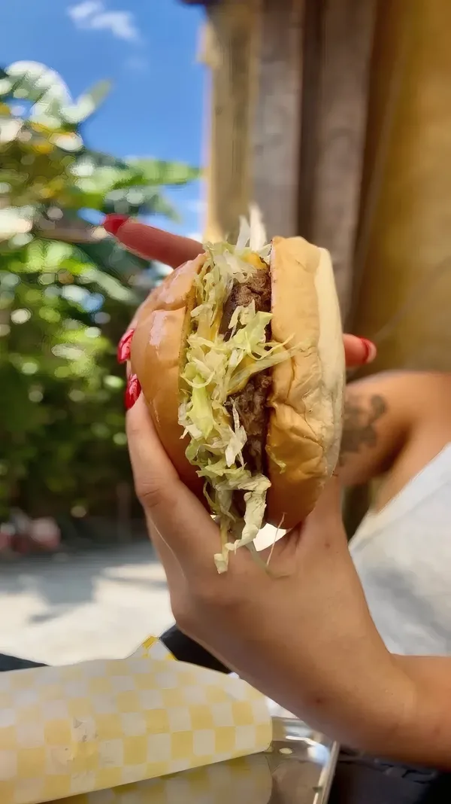
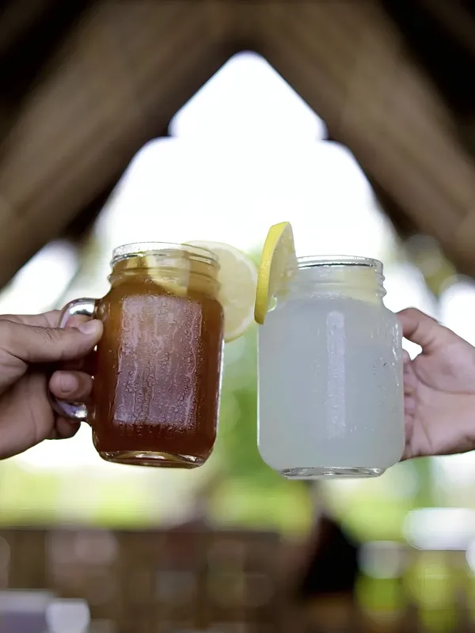
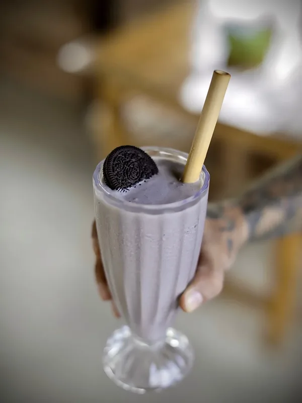
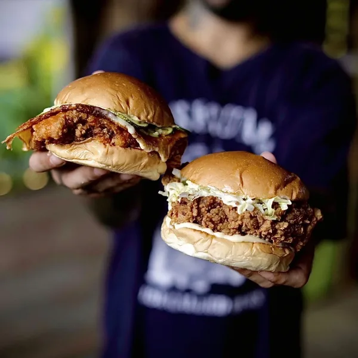
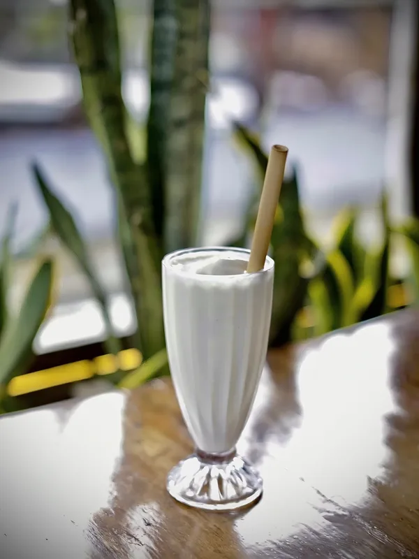
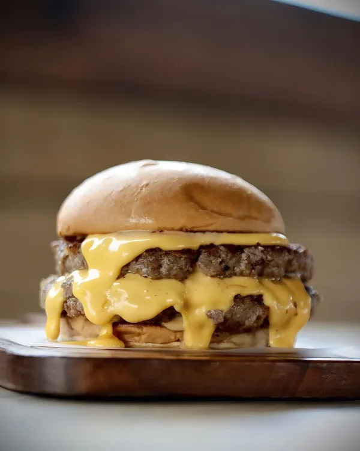
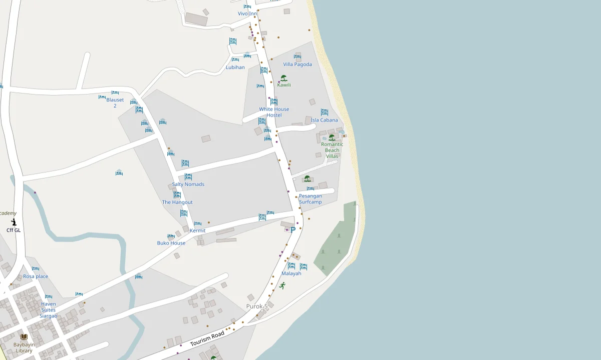
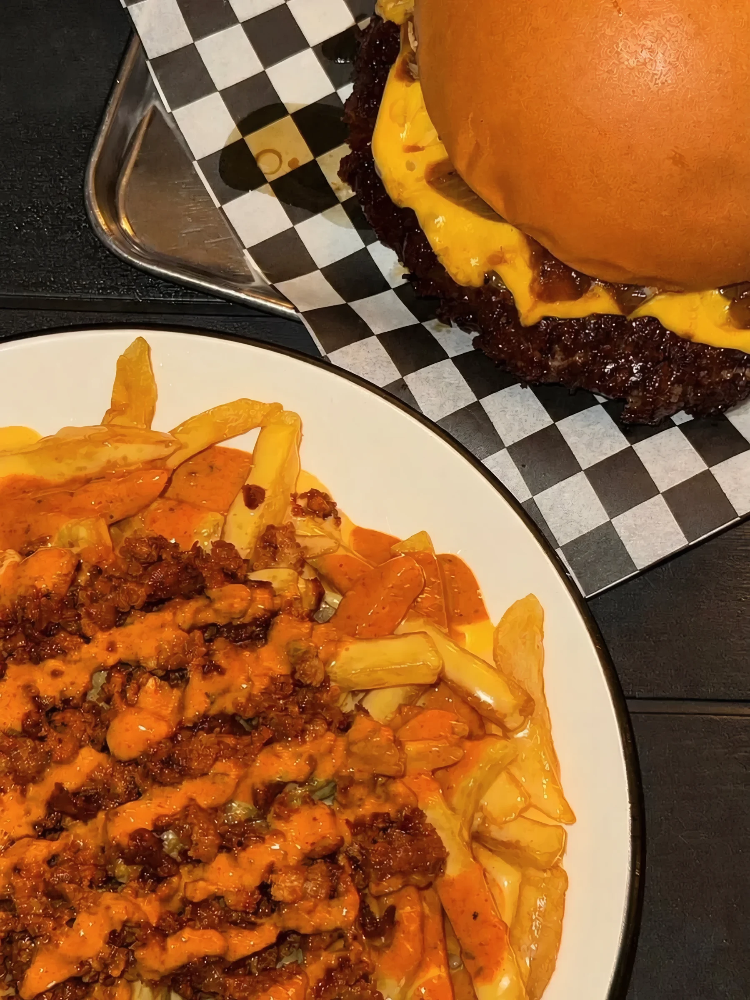
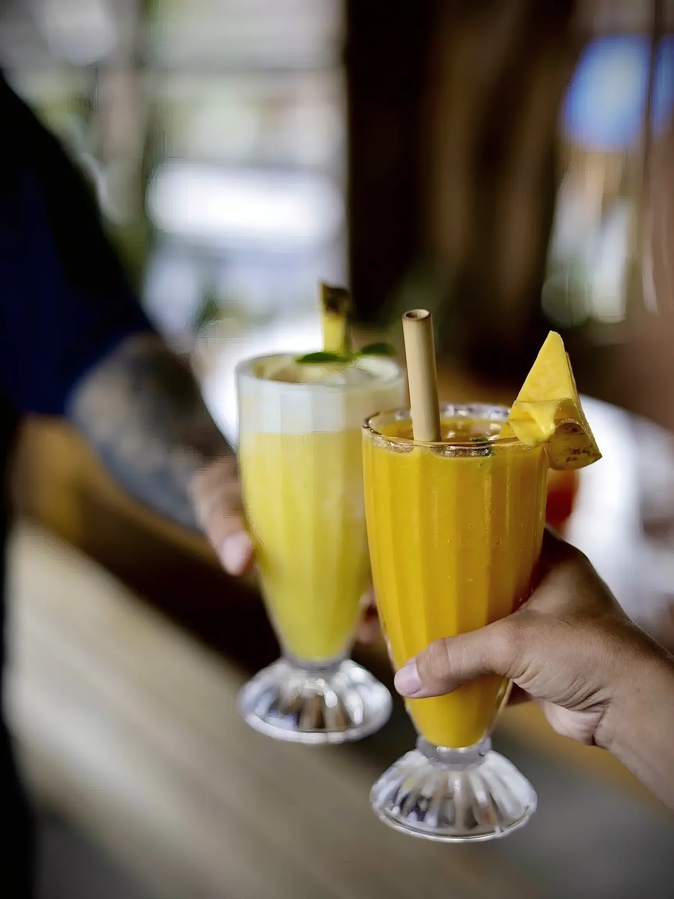
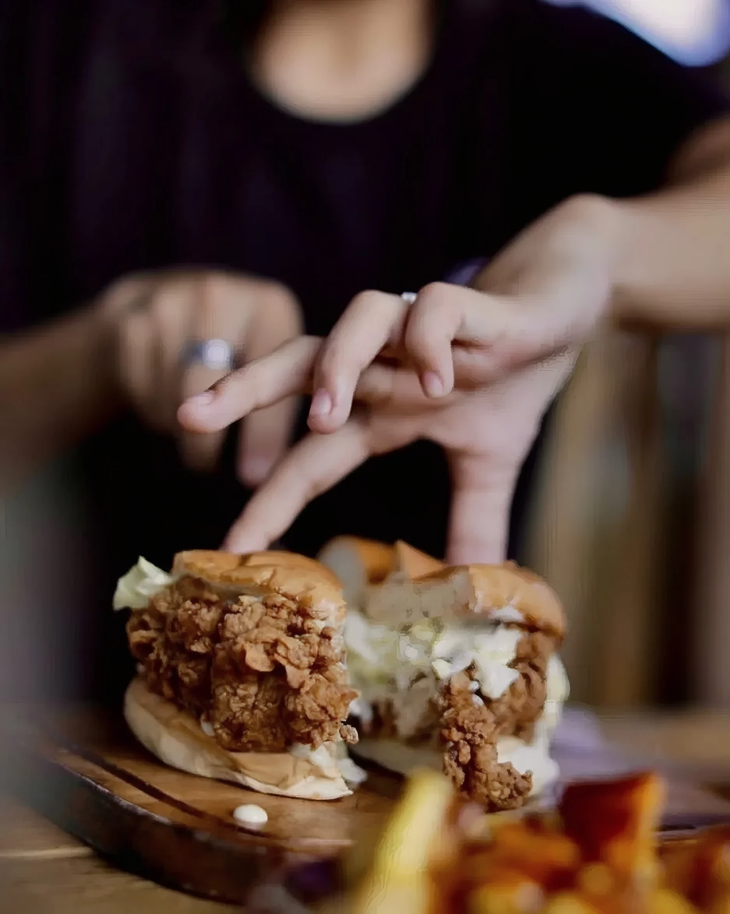

Visit & order
Tourism Road, Purok 3, General Luna. Open every day from 11:30 am to 9:30 pm.






Find the shack
- Address
- Tourism Road, Purok 3, General Luna, Siargao, Surigao del Norte 8419
- Plus Code
- Q5Q6+8X General Luna
- Open
- Every day, 11:30 am to 9:30 pm
- Phone
- +63 918 540 0815
- @bigbellysiargao

© OpenStreetMap contributorsDirections

